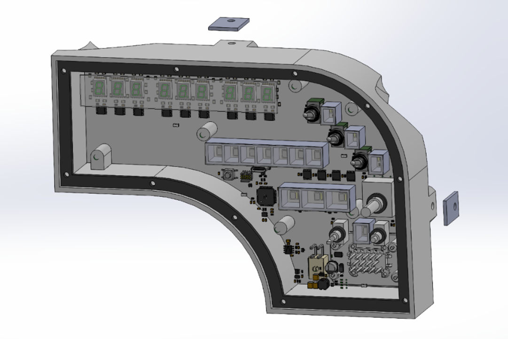
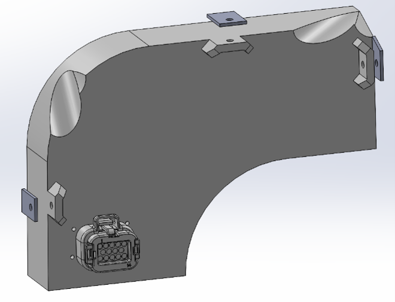
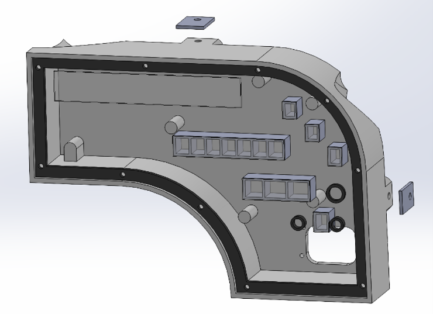
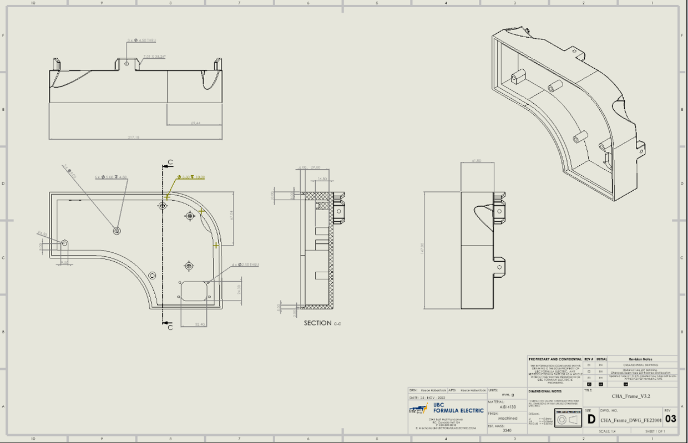

Waterproof driver interface housing for the Formula SAE Electric vehicle
Designed and modeled a custom dashboard enclosure using SolidWorks to house the vehicle's electronic driver interface. As a member of the Mechanical Chassis sub-team, the primary objective was turning complex, conflicting requirements from multiple departments into a lightweight, usable, and high-performance mechanical housing.

Front View (PCB Integrated)

Rear View (Showing Mounting Tabs & Enclosures)
Achieving full waterproofing was critical despite dozens of interface openings. I engineered a large laser-cut rubber gasket to seal the base of the front plate, supplemented by smaller, dedicated rubber seals isolating each individual switch and button.

Leveraged multiple manufacturing techniques, including water jetting for the front plate and 3D printing for the main body. To prevent light bleed between indicators, I integrated 3D-printed internal enclosures around each LED and fitted plexiglass shielding in front of the 7-segment displays.
